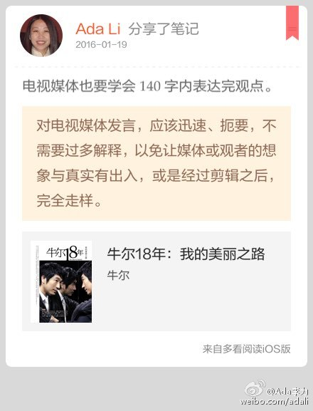
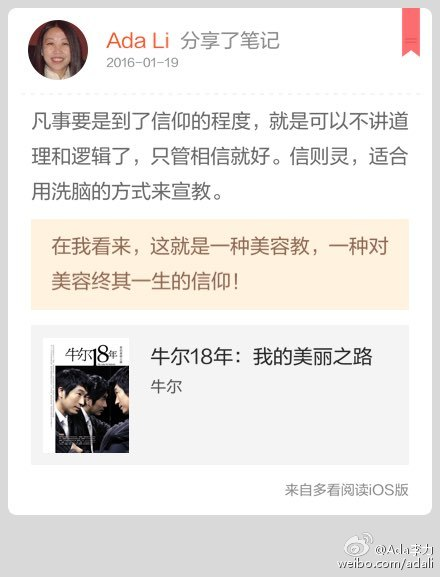

不过这种公开的券商报告，本来也不用期望过高。信息这种东西，稀缺才显价值。真正关键的内容，我想普通大众是不可能通过免费报告获得的。@Ada李力:看了下国泰君安发布的《医疗美容行业深度专题报告》2015年12月底发布的。读完感觉这些研究员没好好地做功课，说的都是口水知识，还有行业错误，比如对爱贝芙的说明。
电视媒体也要学会140字内表达完观点。//#多看笔记# “对电视媒体发言，应该迅速、扼要，不需要过多解释，以免让媒体或观者的想象与真实有出入，或是经过剪辑之后，完全走样。” 摘自《牛尔18年：我的美丽之路》 @多看阅读 网页链接 
凡事要是到了信仰的程度，就是可以不讲道理和逻辑了，只管相信就好。信则灵，适合用洗脑的方式来宣教。//#多看笔记# “在我看来，这就是一种美容教，一种对美容终其一生的信仰！” 摘自《牛尔18年：我的美丽之路》 @多看阅读 网页链接 